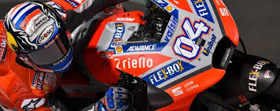

Categoria: Sport -- Data: 23/03/2018 -- Scritto da: Francesco Ligas
Vittoria di Dovizioso a Loasil

Dopo tre secondi posti di fila finalmente Dovizioso riesce a domare la pista di Losail e conquistare la vittoria nel GP inaugurale della stagione.
DesmoDovi si impone in rimonta dal 5° posto in griglia, piegando in volata Marquez che ci ha provato fino in fondo, ma come in Austria e Giappone l'anno scorso si è dovuto arrendere sul filo di lana dell'ultima curva: secondo, ma che show.